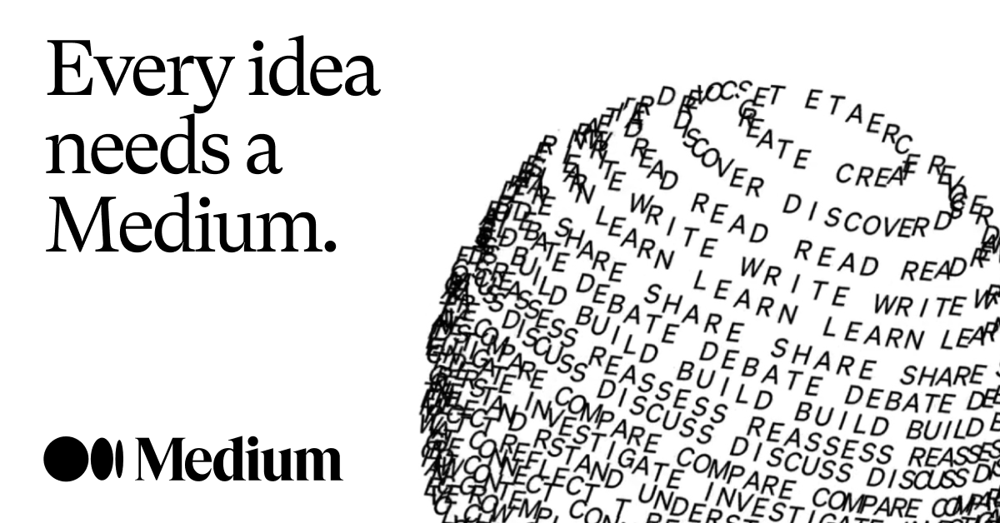

Feb 6, 2021
Own the platform! Own the Medium

Because if you don’t own the platform, you are the product and you must fit the guidelines and hope that the picking algorithm will pick you and show your work.
Be it YouTube Facebook, Twitter, and this medium, even if we can make money with our work we still are the products.
Don’t forget that even with revenue sharing and partner programs like this one with Medium that’s the long tail that applies which means few will make a living and many will get pennies or nothing.
For medium it is not a logical decision to show to a reader an article readable in one minute because they want you to stay longer and read. If I was only writing to get read, it would be OK but writing not just to be read but also to open possibilities for people to achieve and do think that matter and this often don't require a lot of words.
There is for sure an opportunity for a publishing platform that will be at the intersection of medium and Twitter for short-form articles and a new reading experience that help people learn and act together. Like Tik Tok disrupted YouTube you could disrupt Medium with this and it will be our medium you and us.
Go build this medium
Go build this platform
A job as platform is something each one of us deserves whatever our skillset is.